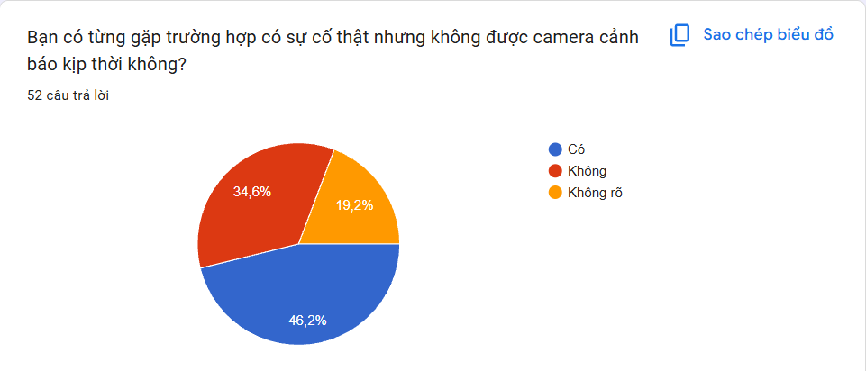
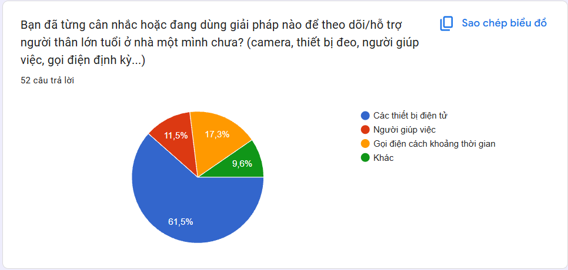
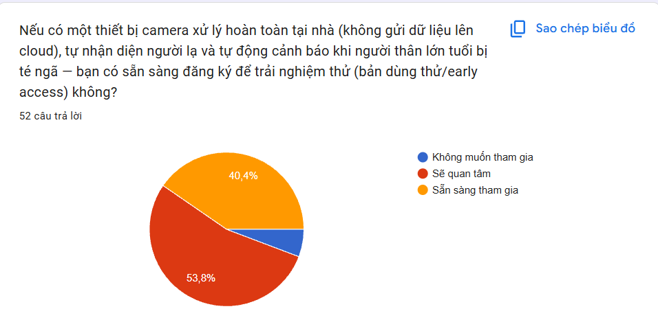
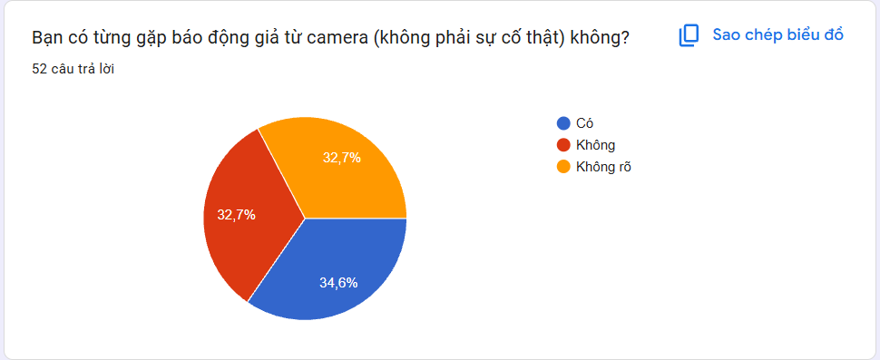
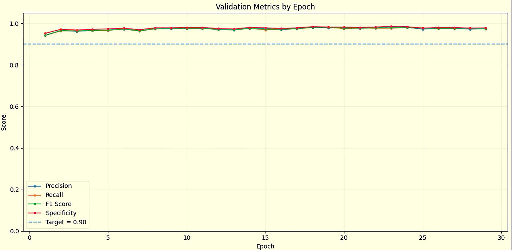
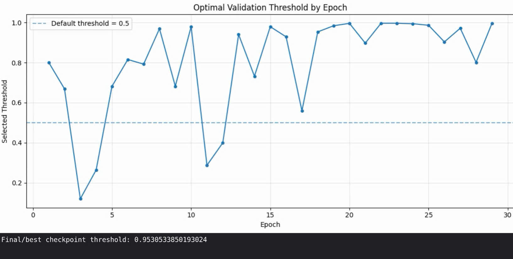
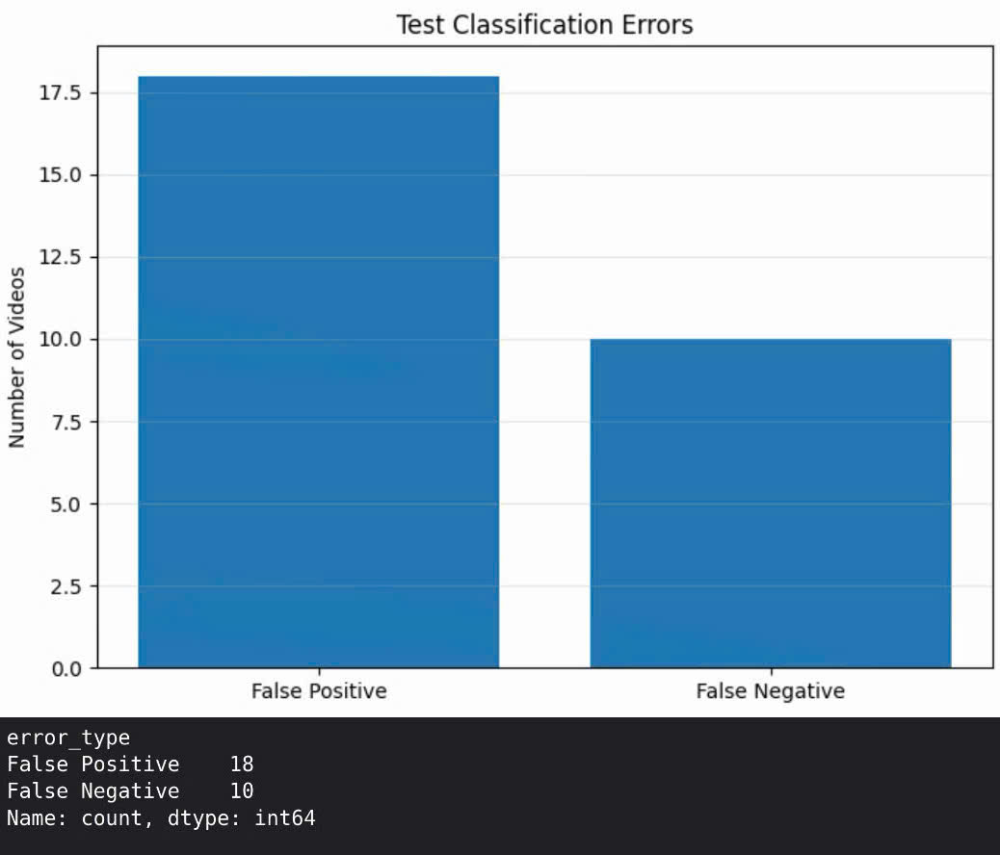
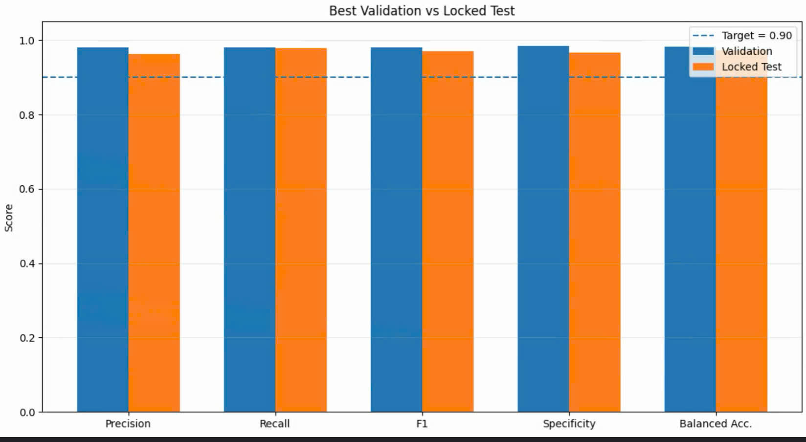
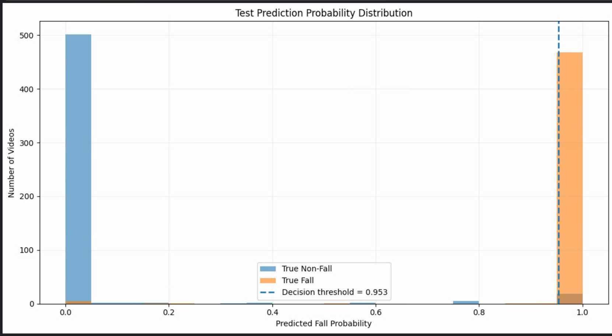

Fall detection · Stranger alert · Privacy by role
SYL
Lớp AI an toàn cho gia đình có người cao tuổi: phát hiện té ngã, cảnh báo người lạ và kích hoạt hỗ trợ khẩn cấp đúng lúc.
YOLO PoseReal-time alertsWebRTC/HLS streamingB2B2C
Lớp AI an toàn cho gia đình có người cao tuổi: phát hiện té ngã, cảnh báo người lạ và kích hoạt hỗ trợ khẩn cấp đúng lúc.
Gia đình cần một hệ thống biết phân biệt sự cố thật với chuyển động bình thường, thay vì chỉ gửi thêm nhiều thông báo nhiễu.
Người đi làm hoặc sống xa không thể luôn theo dõi camera để biết cha mẹ gặp sự cố.
Motion alert quá nhiều khiến người dùng dễ tắt thông báo và bỏ lỡ cảnh báo quan trọng.
Camera gia đình phải kiểm soát ai được xem, xem trong bao lâu và xem vì lý do gì.
Nguồn: report T_137 và 52 câu trả lời survey; missed/false alarm lấy từ ảnh survey; cloud cao = mức 4–5.




Nền thị trường: khoảng 16,1 triệu người cao tuổi tại Việt Nam và 1,5–1,9 triệu ca té ngã mỗi năm tạo nhu cầu rõ cho cảnh báo sớm tại nhà.
Gateway AI kết nối camera IP, phân tích hình ảnh thời gian thực và gửi cảnh báo có bằng chứng đến đúng người xử lý.
Nhận biết tư thế/ngữ cảnh nguy hiểm để kích hoạt cảnh báo khẩn.
Đối chiếu người nhà với người lạ để giảm rủi ro an ninh trong nhà.
Email/app gửi snapshot hoặc video evidence để gia đình xác minh nhanh.
IMOU/IP Camera qua RTSP, SSH reverse tunnel, MediaMTX và FFmpeg để đưa luồng về server.
YOLO Pose ONNX, ONNX Runtime, OpenCV, ByteTrack, Temporal Fall Classifier, YuNet & SFace.
FastAPI, WebSocket, Pydantic, LangChain/LangGraph; điều phối model, alert và quyền truy cập.
PostgreSQL cho metadata, Redis cache, MinIO Object Storage cho snapshot/video evidence.

YOLO Pose, ONNX Runtime, OpenCV, ByteTrack, Temporal Fall Classifier, YuNet & SFace.
MediaMTX, WebRTC/HLS, FFmpeg và SSH Reverse Tunnel cho camera LAN.
React, TypeScript, Vite, hls.js, Canvas overlay; prototype React Native cho mobile.
FastAPI, WebSocket, Pydantic, LangChain/LangGraph cho workflow cảnh báo.
PostgreSQL, Redis và MinIO để lưu metadata, cache và object evidence.
Docker Compose, Caddy HTTPS, uv, pnpm, Pytest, Ruff và MyPy.
Web, API và Media Gateway đã triển khai trên VPS; kết nối thành công camera IP LAN qua SSH Tunnel và gửi email kèm snapshot/video evidence.
Raspberry Pi 5 4GB + hệ thống SYL cho nhu cầu cơ bản.
Raspberry Pi 5 8GB + hệ thống SYL cho cấu hình mạnh hơn.
8GB + nâng cấp bản mới nhất, miễn phí 6 tháng đăng ký đầu.
Mạnh về giá và phân phối, nhưng chủ yếu là motion detection hoặc human detection.
Có hướng fall detection chuyên dụng nhưng chi phí cao hoặc chưa dễ tiếp cận tại Việt Nam.
Định vị là lớp AI chăm sóc: fall detection, stranger alert, evidence và phân quyền.
Thêm camera, phân quyền, xem dashboard và kiểm tra lỗi hệ thống.
Chỉ xem camera được cấp phép và nhận cảnh báo liên quan đến người thân.
Được cấp quyền tạm thời khi có sự cố, phục vụ tư vấn hoặc đánh giá nhanh.
Quyền xem tình huống khẩn cấp tự thu hồi để giảm rủi ro lạm dụng dữ liệu.
Hoàn thiện MVP: access control, emergency alerts và demo run ổn định.
Benchmark trên các gateway/camera phổ biến để đo FPS, độ trễ và độ ổn định.
Đang tìm 2 đối tác cung cấp camera và 1 đối tác cung cấp địa điểm thử nghiệm. Đổi lại: đối tác camera nhận đội kỹ thuật hỗ trợ riêng + ưu đãi giá; đối tác địa điểm nhận sản phẩm dùng thử miễn phí 3 tháng.
Xác nhận hệ thống đạt Recall ≥85% và Precision với độ trễ cảnh báo chấp nhận được trên phần cứng/mạng thực tế của đối tác, không chỉ trong môi trường test nội bộ.
Kết luận: SYL có thể triển khai và launch ra thị trường trong 19 tuần, tính từ lúc hình thành ý tưởng đến sản phẩm hoàn chỉnh.
melphins
Theo dõi Precision, Recall, F1 và Specificity qua từng epoch để kiểm tra độ ổn định.
Chọn ngưỡng dự đoán phù hợp thay vì cố định một threshold cảm tính.
Kiểm tra lỗi false positive/false negative để ưu tiên dữ liệu re-train tiếp theo.




So sánh trực tiếp best validation với locked test để kiểm tra khả năng tổng quát hóa.
Các cột metric được đối chiếu với target 0.90, giúp pitch rõ hơn về mức sẵn sàng thử nghiệm.
Chỉ số latency/FPS là cơ sở để đo lại trên hardware và network thật của đối tác.
